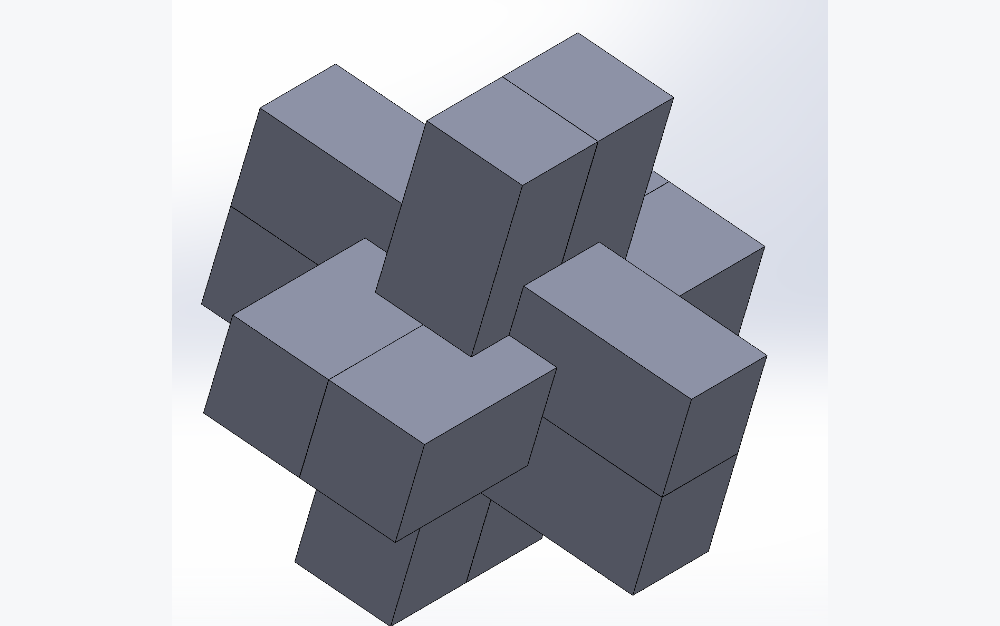
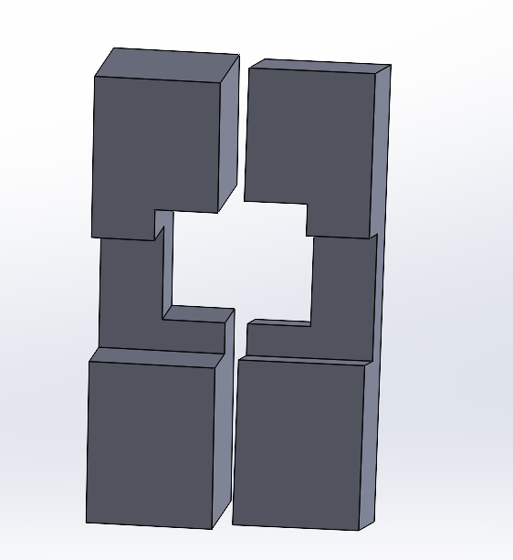
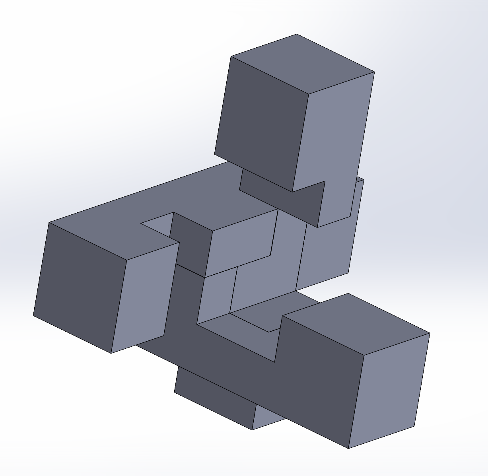
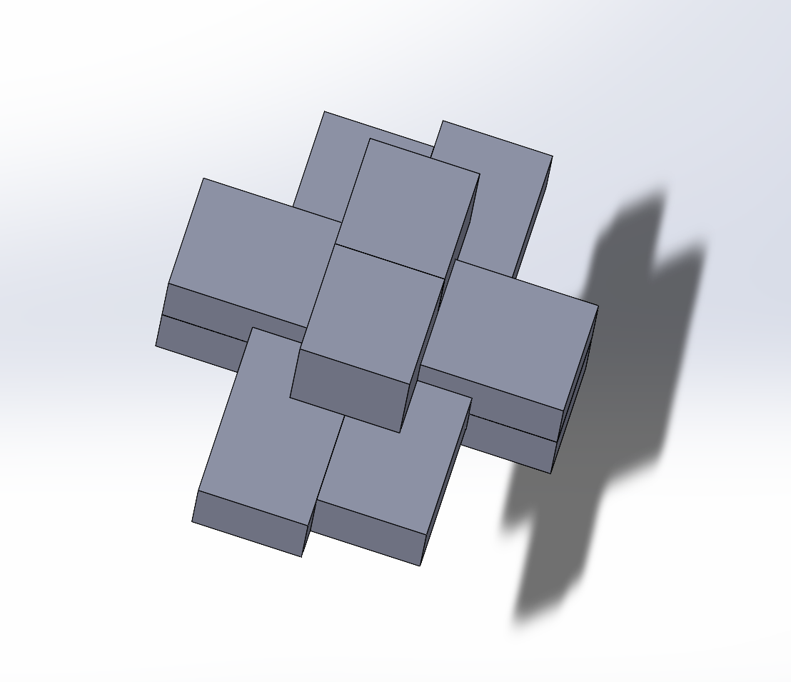

3D Printed Puzzles
Time: Spring 2024
Role: Mechanical Designer
Tools: SolidWorks, 3D Printer

SUMMARY
This project involves recreating former 3D wooden puzzle trinkets in SolidWorks and then 3D printing them. I deeply enjoy these types of puzzles, and trying to recreate them without any dimensions or specifications, just a video, is a puzzle within itself.
PROCESS
Using only YouTube videos for reference, recreating the pieces individually in SolidWorks till they fit perfectly together.




